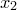
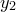
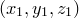
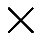

By default, the major tick marks along axes are labelled with representations of the ordinate values at each point, each accurate to the number of significant figures specified using the set numerics sigfig command. These labels may appear as decimals, such as , in scientific notion, as in , or, on logarithmic axes where a base has been specified for the logarithms, using syntax such as1
set log x1 2
in a format such as .
The set xformat command – together with its companions such as set yformat2 – is used to manually specify an explicit format for the axis labels to take, as demonstrated by the following pair of examples:
set xformat "%.2f"%(x) set yformat "%s$^\prime$"%(y/unit(feet))
The first example specifies that ordinate values should be displayed to two decimal places along the x-axis; the second specifies that distances should be displayed in feet along the y-axis. Note that the dummy variable used to represent the ordinate value is x, y or z depending upon the direction of the axis, but that the dummy variable used in the set x2format command is still x. The following pair of examples both have the equivalent effect of returning the x2-axis to its default system of tick labels:
set x2format auto set x2format "%s"%(x)
The following example specifies that ordinate values should be displayed as multiples of  :
:
set xformat "%s$\pi$"%(x/pi) plot [-pi:2*pi] sin(x)
Note that where possible, PyXPlot intelligently changes the positions along axes where it places the ticks to reflect significant points in the chosen labelling system. The extent to which this is possible depends upon the format string supplied. It is generally easier when continuous-varying numerical values are substituted into strings, rather than discretely-varying values or strings. Thus, rather than
 |
set xformat "%d"%(floor(x)) |
the following is preferred
|
set xformat "%d"%(x) |
and rather than
|
set xformat "%s"%time_string(x) |
the following is preferred
|
set xformat "%d/%02d/%d"%(time_day(x),  time_monthnum(x),time_daymonth(x)) |
The set xformat command and its companions may also be followed by keywords which control the angle at which tick labels are drawn. By default, all tick labels are written horizontally, a behaviour which may be reproduced by issuing the command:
set xformat horizontal
Alternatively, tick labels may be set to be written vertically, by issuing the command
set xformat vertical
or to be written at any clockwise rotation angle from the horizontal using commands of the form
set xformat rotate unit(10*deg)
Axis labels may also be made to appear at arbitrary rotations using commands such as
set xlabel "I'm upside down" rotate unit(0.5*revolution)
Footnotes
![\includegraphics[width=0.9cm]{tick.eps}](images/img-0030.png)